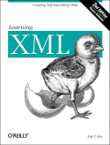

|  |
| About IR |
| Editors |
| Author instructions |
| Copyright |
| Author index |
| Subject index |
| Search |
| Reviews |
| Register |
| Home |
Ray, Erik T. Learning XML. (2nd ed.) Sebastopol, CA: O'Reilly, 2003. xiv, 400, [1] p. ISBN 0-596-00420-6 $39.95
XML is reported to be increasingly used, but it is rather difficult to come by any data, the most recent survey data I could find dates to 2001. In May of that year Evans Data Corporation reported that the percentage of international developers (i.e., outside the USA) using XML had increased from 25.7% to 38.2% in six months (Singer, 2001) and, in October 2001, the Cutter Consortium reported (Bragg, 2001) that of the companies surveyed, 26% were using XML in a major project, while 17% were committed to extensive use of XML. Since 2001, however, there seems to have been a lack of similar surveys. Presumably the growth has continued and it will have been given a boost by Microsoft's decision to adopt it to underpin .NET Web services.
No matter: to the book. Presumably, the fact that it is now in its second edition implies that the first edition was a success. Rather unusually, there is no information in the book about what changes have been made in this edition. I discovered, from my review of the first edition that it is about fifty pages longer. I also discovered from the O'Reilly Web site that this edition has two more chapters than the first and that the chapter titles are quite different, so I assume there has been a complete revision of the text. A prospective buyer, especially one who has the first edition, would find this quite useful to know and I don't understand why the publisher doesn't make more of the fact.
XML means 'Extensible Markup Language' and it is a derivative of SGML - the Standard Generalised Markup Language - as, indeed, are pretty well all markup languages. SGML has been used by the publishing industry for years and, in effect, XML is the outcome of failed attempts to make SGML manageable for the Web. Like all markup languages, its purpose is to encode documentary elements, to enable the standardisation of documents of various kinds, from order forms to journal articles, allowing the interchange of documents with common markup, as well as more sophisticated modes of searching. XHTML, used as the markup language in this journal, is a modest derivative of XML, or, rather, HTML made consistent with XML. However, XML is not really a 'markup language' but a framework for creating specialised markup languages, such as MathML, the Mathematics Markup Language.
Ray deals with the complexities of XML in ten well-written (at times even entertaining) chapters. Chapter 1, the Introduction, is more than a simple introduction to the rest of the book. It answers four basic questions: What is XML? Where did XML come from? What can I do with XML? and How do I get started? If you read nothing more than these first forty-eight pages, you will have a good idea of the aims and possibilities of XML.
The basics of XML are presented in Chapters 2 to 4, which deal with tags, elements and entities; information modelling; and DTDs and schemas. The latter, of course, are at the heart of XML, since they provide the rules whereby the tags you have designed for an application are used, and they enable the validation of the code you write with those tags. Ray somewhat understates things when he says: "...managing a large DTD—maintaining hundreds of element and attribute declarations while keeping them readable and bug-free—can be a challenge." Indeed! Managing a small style-sheet can be trouble enough!
Schemas provide a greater degree of control over the specification of the tagged information, and three schema systems are described in Chapter 4: the W3C Schema, RELAX NG, and Schematron and Ray concludes that RELAX NG is his schema system of choice.
Chapters 5 deals with aspects of presentation, involving cascading style-sheets (CSS), and if you have used style-sheets with HTML, this chapter will be fairly straightforward. It is separated from the next chapter on presentation (Chapter 8) by two chapters on more specialised tools. Chapter 6 deals with XPath and XPointer: XPath enables the designer to locate specific information in an XML file, thereby being able to fetch that information to another application. XPointer might be thought of as an extesion of the HTML "#" feature, which enables links within a document. XPointer goes further by enabling linking to a point in a document based on content, so that, for example, the next instance of a word or phrase in a text may be pointed to.
Chapter 8 deals with the rather arcane world of XSL-FO - the successor to CSS for XML. Its initials stand for Extensible Stylesheet Language-Formatting Objects and it allows for greater flexibility in the use of styles than CSS. However, as no browsers currently interpret XSL, its use is probably restricted to in-house systems that have the necessary expertise to build the required interpreters for specialised applications.
The final two chapters deal, respectively with Internationalization and Programming. The first deals with the troublesome issue of character encoding (always a problem when you produce an international journal - for example, our Book Review Editor's surname has be be represented wherever it appears, as "Macevičiūtė" - since the required diacritics aren't available on the standard keyboard, and probably wouldn't be represented correctly even if they were!)
Finally, Chapter 10, deals with Programming - not my kind of thing, so I'll leave to the interested reader to decide what it's all about.
In my review of the first edition, I grumbled about some rather loose language because the author claimed that, "XML can store and organize just about any kind of information in a form that is tailored to your needs.". In this edition, the language is a little different but it amounts to the same thing; Ray claims that XML is an 'information container'. That is a metaphor, of course, but it doesn't seem to me to be a very useful one and, in fact, as a metaphor, it is little used in the rest of the book. A markup language is just that - from the set of tags available (which you may design yourself, in XML) you choose those that describe the different document content elements. It would be right to describe XML as an 'information description tagging system', but not a 'container'. In fact, if it was a container, it would hide what is there! Sadly, we have become rather accepting of the computer industry's mangling of the English language.
Setting aside this continuing grumble, however, my concluding comment on the first edition, serves for this:
In spite of my beginning grouse, this is a sound piece of work on XML. Clearly, with a developing standard such as XML nothing ever stays still for long and the various applications and tools appear at a disconcerting rate. However, if you begin with a book like this and take in the fundamentals thoroughly, there is no reason why future developments will not be manageable.
The book has its own Web page at O'Reilly, from where you can download the example code. When I tried this, WinZip gave an error message, but you may have more success.
References
Bragg, T. (2001). XML use on the rise. The Cutter Edge. Arlington, MA: The Cutter Consortium. Retrieved 28 December, 2003 from http://www.cutter.com/research/2001/edge011002.html
Singer, M. (2001). XML use almost doubled in 6 months says survey. Internet News.com Retrieved 28 December, 2003 from http://siliconvalley.internet.com:80/news/article.php/762281
Professor T.D. Wilson
Editor-in-Chief
December 2003
How to cite this review
Wilson, T.D. (2004) Review of: Ray, Erik T. Learning XML. (2nd ed.) Sebastopol, CA: O'Reilly, 2003. Information Research, 9(2), review no. R120 [Available at: http://informationr.net/ir/reviews/revs120.html]